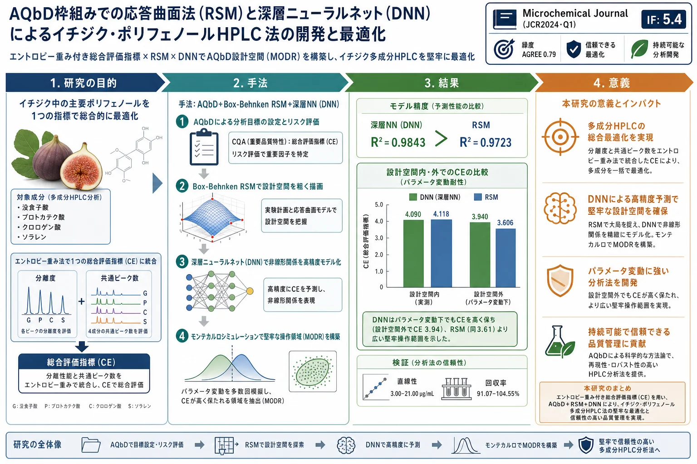
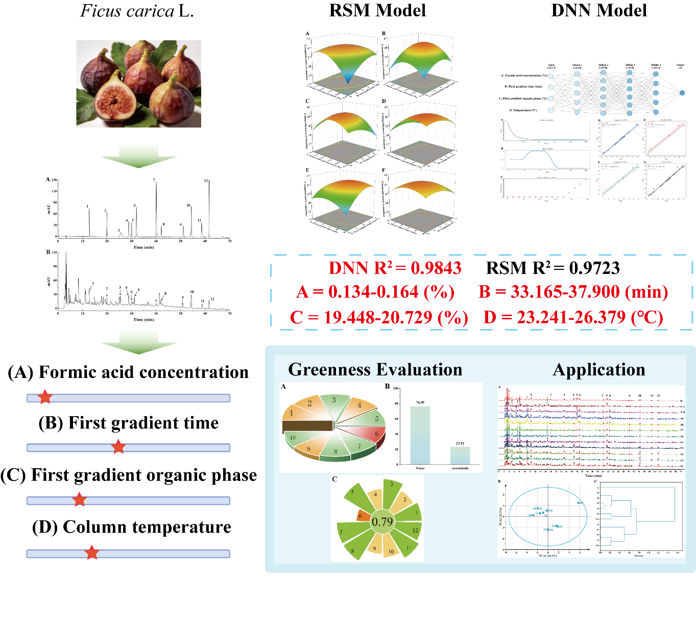
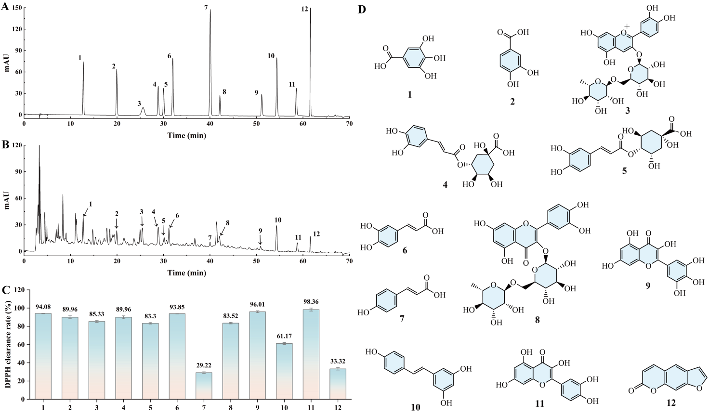
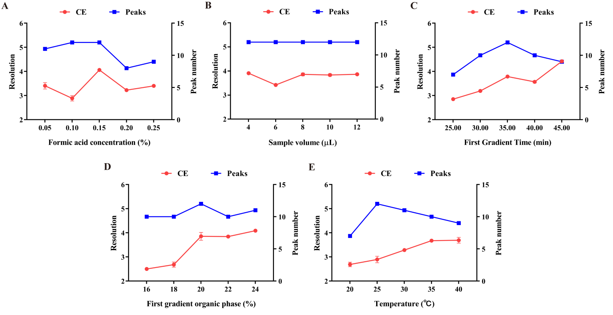
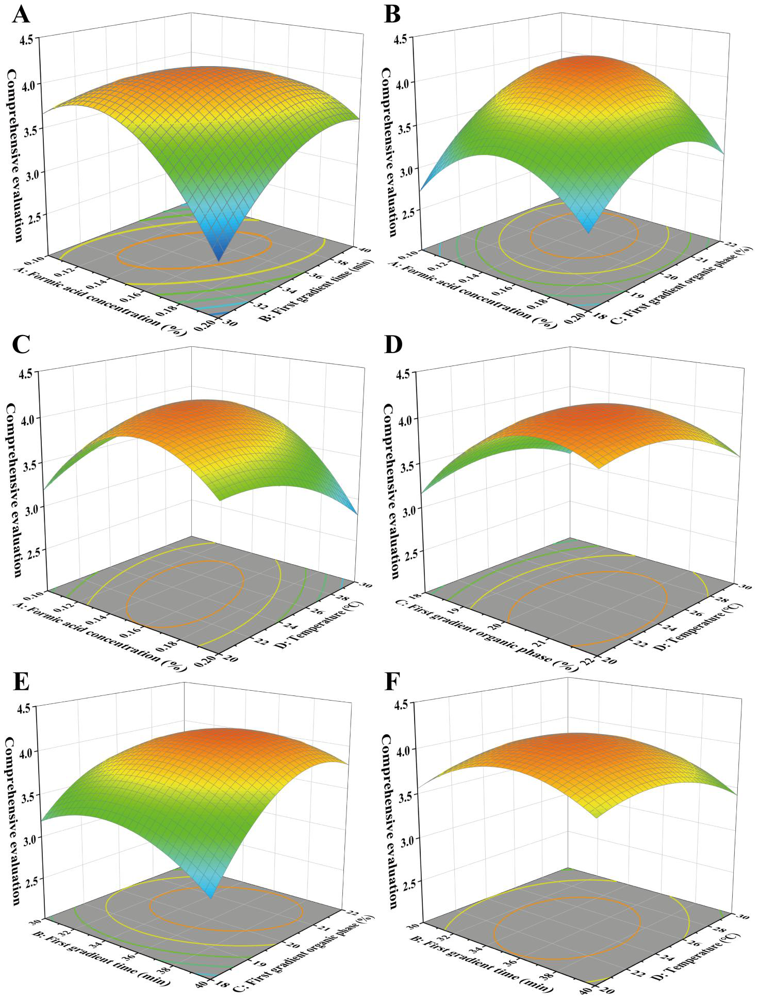
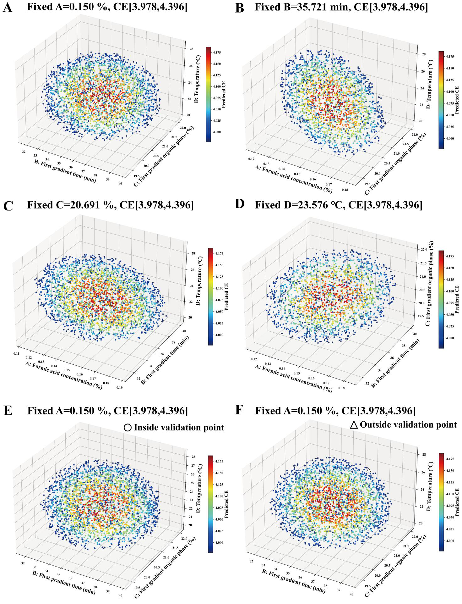
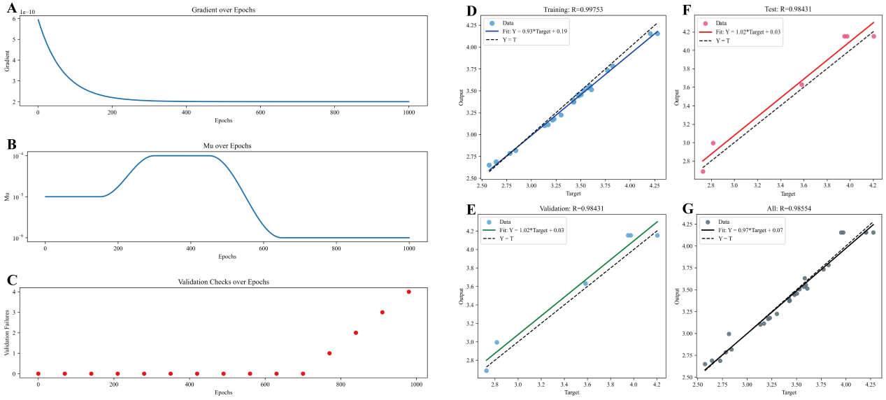
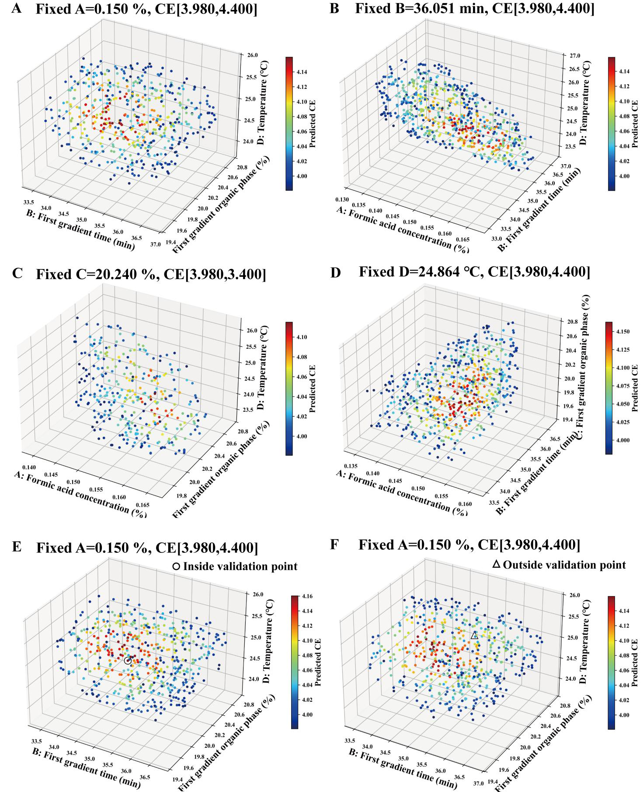
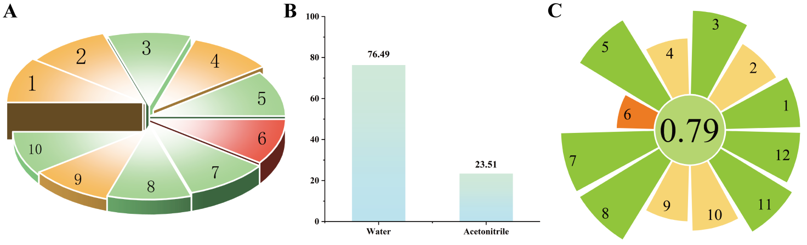
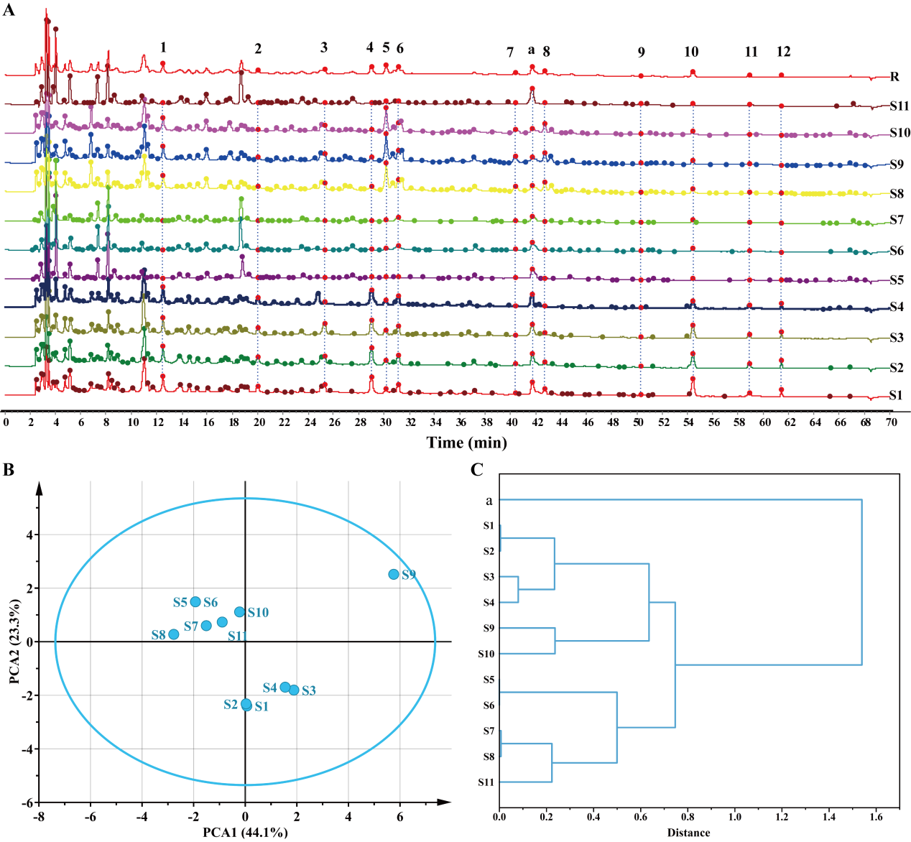

AQbD枠組みでの応答曲面法（RSM）と深層ニューラルネット（DNN）によるイチジク・ポリフェノールHPLC法の開発と最適化

<!-- Pang et al., Microchemical Journal (2026) 118797（Journal Pre-proof）の全訳密度日本語版。 practitioner レベル（AQbD実務手順が中心）。表1（ANOVA）・表2（検証）は全数値を表で保持。 数式（エントロピー重み法・RSM回帰式）は本文の通り復元。図（Fig.1–8）とSI表（S1–S13）は原文参照。 -->
書誌情報
- 標題（原題）: Application of Response Surface Methodology and Deep Neural Networks Based on the AQbD Framework in the Development and Optimization of an HPLC Method for Fig Polyphenols
- 著者: Tuxia Pang, Wenhuan Ding, Juan Zhang, Xiaoyan Ma, Chunzi Zhang, Mihriban Arken, Shihao Yuan, Xiaoli Ma（責任著者）, Junmin Chang（責任著者）
- 所属: 新疆医科大学 薬学院（中国・ウルムチ）／新疆天然薬物有効成分・薬物放出技術重点実験室
- 掲載誌・巻号・DOI: Microchemical Journal (2026) 118797. DOI: 10.1016/j.microc.2026.118797（Journal Pre-proof）
- インパクトファクター: 5.4（Microchemical Journal, JCR 2024 / Clarivate。Q1）
- 受理経過: 2026年4月2日受領／5月31日改訂／6月19日受理。© 2026 Elsevier B.V.
- 資金: 自治区科技合作計画（2025B04044-003）
- データ公開: 要請に応じて提供
補足: イチジク（Ficus carica L.、クワ科）は新疆の特色ある果樹資源で、食品・健康食品・民族医薬に用いられる。没食子酸・カフェ酸・ルチン・ケルセチンなどのポリフェノールに富み、抗炎症・抗菌・腸内細菌叢調節・糖代謝改善などの生物活性を持つ。本論文は、これら多成分を「分析的QbD（AQbD）」の考え方で堅牢にHPLC分離する方法を、応答曲面法（RSM）と深層ニューラルネット（DNN）を組み合わせて開発した事例。生薬・天然物の品質評価に直結する手法論である。
要旨（Abstract）
本研究は、分析的Quality by Design（AQbD）の概念に基づき、イチジク・ポリフェノールの多成分HPLC分析法を開発した。重要方法パラメータ（Critical Method Parameters, CMPs）の同定に基づき、エントロピー重み法（Entropy Weighting Method）を用いて総合評価指標（Comprehensive Evaluation Index, CE）を構築した。応答曲面法（RSM）と深層ニューラルネット（DNN）モデルを統合することで、総合評価の高精度予測を達成し、方法操作可能設計領域（Method Operable Design Region, MODR）を確立した。
結果は、DNNモデル（R² = 0.9843）が予測精度と堅牢性においてRSMモデル（R² = 0.9723）を上回ることを示した。DNNモデルは総合評価値4.190を予測し、RSMの4.187より高く、パラメータ摂動下でも高いCE水準を維持し、より広い堅牢操作空間に対応した。確立したHPLC法は、直線範囲（3.00–21.00 μg/mL）、感度（LOD: 0.31–1.09 μg/mL；LOQ: 0.62–1.89 μg/mL）、精度（RSD < 2%）、回収率（91.07%–104.55%）の要件を満たした。緑色度評価の結果は、本法の環境親和性を示した。さらに本法をイチジク・ポリフェノールの指紋分析に応用することで、異なる産地の試料を効果的に判別でき、ポリフェノール組成の化学的差異が明らかになった。提案法は、イチジク・ポリフェノールおよび他の天然ポリフェノール化合物の系統的分析・同定に有望な方法論的アプローチを提供する。
キーワード: イチジク；AQbD；DNN；緑色開発；指紋分析

1. 序論（Introduction）
分析的Quality by Design（AQbD）は Quality by Design（QbD）の重要な一分野であり、分析ターゲットプロファイル（Analytical Target Profile, ATP）の達成を強く重視した分析法開発に焦点を当てる。その核心は、重要方法パラメータ（CMPs）を同定・制御し、実験計画（DoE）を用いて設計空間（Design Space）または堅牢な方法操作可能設計領域（MODR）を構築することにある。このアプローチは開発段階での分析法の堅牢性と一貫性を高める。2025年版中国薬典はプロセス指向の品質管理と科学的設計を強調し、伝統中医薬・天然物でのAQbD推進の政策的基盤を提供している。現在、AQbDの枠組み下で、魚腥草（ドクダミ）と黄芩の複方煎じ液の水抽出濃縮物中7ポリフェノール成分のHPLC定量法が開発・検証され、方法の安定性と実現可能性が確認されている。ただし、移動相pH・有機相比・カラム温度といった分析パラメータの最適化にはDoEの実装が必要である。
DoEが提供する統計的枠組みは、1つまたは複数の因子の効果を包括的に解析でき、製薬業界と植物多成分系の分析で大きな注目を集めてきた。Singhらは、AQbDの枠組み内でDoEを用いてスイカズラ（Lonicera japonica）の8化学成分の抽出効率とクロマト分離を最適化し、異なる種とその潜在的偽和試料の判別に成功裏に応用した。続いてChen Jingらは、伝統的な単因子実験とBox-Behnken設計を組み合わせて、ウツボグサ（Prunella vulgaris）水抽出物中3ポリフェノールのHPLC分析条件を最適化した。しかし現行のAQbDベースDoE応用は主に伝統的な単因子実験とRSMのような統計モデルに依存する。それらの多項式仮定に基づくモデリング手法は、クロマト系の高度に非線形なパラメータ-応答関係を扱う際、予測精度と外挿能力に限界がある。
近年、深層ニューラルネット（DNN）は、非線形写像と高次元データフィッティングの利点により、多変数非線形問題のプロセス最適化で従来モデルより優れた予測性能を示している。Pangらは、メギ種子からのポリフェノール抽出プロセスのモデリングにRSMとDNNの双方を用いた。彼らの知見では、実験サンプルサイズの制約により、DNNモデルの予測性能はRSMを有意には上回らなかった。これを踏まえ、DNNとRSMの組み合わせが有望なモデリング戦略とされる。このアプローチは、パラメータ影響解析でのRSMの高い解釈性を保ちつつ、複雑な非線形関係を捉える限界に対処する。この限界を克服するため、Suらは仮想サンプル拡張を用いて実験データセットを29から174サンプルに拡張し、DNNモデルの予測精度を大幅に改善しRSMを上回らせた。しかし仮想サンプルのみに依拠したモデル予測は、モデルの汎化能力とデータの信頼性に影響しうる。DNNはポリフェノール抽出などのプロセス最適化研究に応用されてきたが、それらをAQbDの枠組みに統合し、DoEと組み合わせて設計空間構築と堅牢性評価を行う系統的研究はまだ乏しい。
イチジク（Ficus carica L.）はクワ科の重要な経済植物である。新疆の特色ある森林果実資源として、その果実は食品・健康製品・伝統民族医薬に広く応用される。現代研究は、イチジクが没食子酸・カフェ酸・ルチン・ケルセチンなどのポリフェノール化合物に富み、抗炎症・抗菌・腸内細菌叢調節・糖代謝改善など多様な生物活性を示すことを示している。しかしイチジクは化学組成が複雑で地理的変動の影響が大きい。先行研究は、異なる産地のイチジク間でポリフェノール組成と相対分布パターンに系統的差異があることを実証している。これにより、ポリフェノール指紋に基づく全体論的分析が、産地判別と品質評価の重要なアプローチとなる。HPLCは高い分離効率と広い適用性により、イチジク・ポリフェノールの分離・定量分析の中核技術となっている。Qinらは HPLC-UV で没食子酸・クロロゲン酸・ルチンなどを分析したが、少数の標的化合物の定量に焦点を当て、ポリフェノール全体の組成特性を系統的に反映するのは困難だった。続いてSabirらはより高感度な HPLC-DAD を導入して没食子酸・カフェ酸・ケルセチン・レゾルシノールなどを同定したが、確立された条件下での分離は限定的なままだった。共溶出に対処するため、KebalらはHPLC条件を調整して3,4-ジヒドロキシ安息香酸・バニリン酸・ルチン・ケルセチンの分離を改善した。しかし既存研究の条件最適化は主に伝統的な単因子・応答曲面法に依存し、系統的な設計枠組みを欠く。したがって、AQbDにRSMとDNNモデルを組み合わせて多成分分離効率・指紋の完全性・方法の堅牢性を高めることが重要な研究方向である。
以上の背景に基づき、本研究はイチジク・ポリフェノールに焦点を当て、AQbDとRSM・DNNを統合したHPLC法を確立した。総合評価指標（CE）をエントロピー重み法で構築し、没食子酸・プロトカテク酸・クロロゲン酸・ソラレンの分離効率と指紋スペクトルの全体情報量を同時に定量化した。AQbDの枠組み内でCMA（重要方法属性）とCMPを同定。RSMを用いてMODRを予備的に画定し、続いてDNNでクロマトパラメータとCEの非線形関係を高精度モデル化してデータ駆動型の堅牢操作領域を確立した。同時に確立法の緑色度を評価し、持続可能な分析開発の要件を満たした。この方法を異なる産地のイチジク試料の分析・判別に応用した。
2. 材料と方法（Materials and Methods）
2.1 材料
生薬材料: イチジク生薬は新疆医科大学薬学院 天然薬物化学教室のCong Yuanyuan教授が同定し、同薬学院に保管。試料S1–S4は新疆アトシュ、S5–S7はアクス、S8–S10はカシュガル、S11はホータン産。
試薬: 全標準品は純度≥98%、化学試薬は分析グレード。没食子酸・プロトカテク酸・シアニジン-3-O-ルチノシド塩化物・クロロゲン酸・p-クマル酸・ルチン・ケルセチンは上海源葉生物、ソラレンは上海麦克林生化、ミリセチンは北京ソラビオ、カフェ酸・クロロゲン酸・レスベラトロールは成都曼思生物から購入。ペクチナーゼとセルラーゼは福建福大百特生物から購入。クロマトグラフィーグレードのメタノール・アセトニトリルは Thermo Fisher Scientific（米国）、ギ酸は天津大茂化学試薬廠から購入。
2.2 装置
高速液体クロマトグラフ Agilent 1260（米国）；カラム INERTSIL ODS-3 C18（250 mm × 4.6 mm, 5 µm, GL Sciences 上海）；電子天秤 LE104E（Mettler Toledo）；超音波洗浄機 KQ5200DE（昆山超音波）。
2.3 溶液調製
2.3.1 標準溶液: 100%エタノールに溶解（没食子酸・プロトカテク酸・シアニジン-3-O-ルチノシド・クロロゲン酸・クリプトクロロゲン酸・カフェ酸・p-クマル酸・ルチン・ミリセチン・レスベラトロール・ケルセチン・ソラレン）。各をHPLCグレードメタノール5 mLに溶かし褐色メスフラスコで定容し、2 mg/mLストック溶液を調製。
2.3.2 試料溶液: イチジク粉末1 gに脱イオン水10 mLを加え、ペクチナーゼ（0.6% w/v）とセルラーゼ（2.5% w/v）を加え、50℃で30分振とう酵素分解。8000 rpmで10分遠心し、上清を0.22 μmフィルターに通して溶液を得る。
2.4 HPLC条件
ポリフェノールは210–372 nmで強吸収を示し、本研究は検出波長280 nmを選択。カラム INERTSIL ODS-3 C18（250×4.6 mm, 5 µm）；移動相 A=0.15%ギ酸水、B=アセトニトリル；勾配条件（Radwanらより適応）: 0–35分 A: 98%→80%、35–55分 A: 80%→65%、55–60分 A: 65%→40%、60–65分 A: 40%→10%、65–67分 A: 10%→98%、67–70分 A: 98%（平衡化）。カラム温度25℃、流速1 mL/min、注入量10 μL。
2.5 ATP・CMA・CMPの決定とリスク評価
植物抽出物の複雑組成を考え、正確な成分同定に十分なクロマトピーク分離度を確保し、分離度（Rs）を主要評価指標とした。変動源（方法パラメータ・装置・試料・操作者）をフィッシュボーン図で同定し、故障モード影響解析（FMEA）でリスクを定量化。基準: (1) 標的成分間の分離度 Rs ≥ 1.2；(2) 総ラン時間 ≤ 70分；(3) 総ピーク数 ≥ 12；(4) 安定なベースライン。これらに基づきCMAとCMPを決定。
2.6 DoEと方法最適化
2.6.1 CE値の計算: エントロピー重み法は各指標の結果への影響に基づいて重みを割り当て、主観的偏りを最小化する客観的重み付けを提供する。各指標が提供する情報を考慮し、変動が小さい指標は情報量が少なく、対応する重みも低くなる。本研究は没食子酸・プロトカテク酸・クロロゲン酸の分離度と12成分間の共通ピーク数を評価指標に選び、各成分の重み係数（Wj）を算出。CE指標は各指標成分を重み付けして形成される尺度である。CE値は次式で算出:
CE = 没食子酸分離度 × Wj1 + プロトカテク酸分離度 × Wj2 + クロロゲン酸分離度 × Wj3 + ソラレン分離度 × Wj4 + 共通ピーク数 × Wj5
情報エントロピー値（Ej）が小さいほど、エントロピー重み係数は大きくなる。これは、エントロピー重みが小さい指標ほど情報量が多く影響が大きく、高い重み値を得ることを示す。
データ標準化（式1）:
$$y_{ij} = \frac{x_{ij} - \min x_{ij}}{\max x_{ij} - \min x_{ij}} \tag{1}$$
確率行列 Pij を得る（式2）:
$$P_{ij} = \frac{y_{ij}}{\sum_{i=1}^{m} y_{ij}} \tag{2}$$
各指標成分の情報エントロピー Eij を算出（式3、k は定数）:
$$E_{ij} = -k \sum_{i=1}^{m} P_{ij} \ln P_{ij} \tag{3}$$
各指標のエントロピー重み係数 Wj を算出（式4）:
$$W_j = \frac{1 - E_{ij}}{\sum_{j=1}^{n} (1 - E_{ij})} \tag{4}$$
2.6.2 単因子実験: フィッシュボーン図とFMEAの結果に基づき、ギ酸濃度・第1勾配時間・第1勾配有機相比・カラム温度を影響因子に選択。条件: ギ酸濃度（0.05, 0.1, 0.15, 0.2, 0.25%）、第1勾配時間（25, 30, 35, 40, 45分）、第1勾配有機相比（16, 18, 20, 22, 24%）、カラム温度（20, 25, 30, 35, 40℃）。没食子酸・プロトカテク酸・クロロゲン酸・ソラレンのピーク分離度と総ピーク数に基づき最適条件を決定。
2.6.3 RSM設計: 予備単因子実験の結果に基づき、Box-Behnken設計を採用。独立変数はギ酸濃度・第1勾配時間・第1勾配有機相比・カラム温度、応答変数は没食子酸・プロトカテク酸・クロロゲン酸・ソラレンの分離度。Design-Expert 11のBox-Behnken組み合わせ試験でイチジク注入条件を最適化し応答曲面モデルを確立（因子・水準設計はTable S1）。
2.6.4 RSM-MODRの確立: RSMの最適化結果に基づき、モンテカルロ法でクロマト条件の不確かさを定量化しMODRを決定。RSMモデルが予測した最適条件を基準点として、主要パラメータの合理的変動範囲内で一様分布ランダムサンプリング。具体的にはギ酸濃度（0.1–0.2%）・第1勾配時間（30–40分）・第1勾配有機相比（18–22%）・カラム温度（20–30℃）の範囲で計10,000パラメータ組み合わせを生成。RSM二次回帰モデルが各組み合わせのCEを予測し、許容範囲を最適CE値の±5%と定義。この閾値はICH Q2(R1)の分析法堅牢性要件を参照し、本研究の反復実験のCEのRSD（<2%）を取り込んで設定。
2.6.5 DNN設計: TensorFlowでDNN回帰モデル（Figure S2）を構築しCE指標を予測。完全結合フィードフォワード構造を採用。入力層は4プロセスパラメータ（ギ酸濃度A%・第1勾配時間B分・第1勾配有機相比C%・カラム温度D℃）。隠れ層は128・256・256・128ニューロンの4つの完全結合ネットワークから成り、各層はLeakyReLU活性化関数を用い、過学習リスク軽減のため0.1のドロップアウト率を導入。出力層は単一ニューロンでCE予測値を直接生成。
実験データはBox-Behnken応答曲面設計の29実験サンプル群に由来。限られた実験条件下でのデータ不足緩和と過学習軽減のため、Mixup補間とガウスノイズ摂動を組み合わせたデータ拡張戦略を訓練データセットにのみ適用し、検証・テストデータセットは全過程を通じて不変とし客観的なモデル評価を確保。各元訓練サンプルにつき15の拡張サンプルを生成。Mixupでは2つの訓練サンプルをランダム選択し、0–1で一様サンプリングした補間係数λで線形補間。補間した特徴ベクトルに、各特徴次元の訓練データセット標準偏差の2%を標準偏差とする平均ゼロの正規分布からサンプリングしたガウスノイズを加え、元訓練データと結合してモデル訓練に用いた。
2.6.6 DNN-MODRの確立: DNNの最適化結果に基づき、モンテカルロ法でクロマト条件の不確かさを定量解析しMODRを決定。ギ酸濃度・第1勾配時間・第1勾配有機相比・カラム温度をDNN最適値に固定。ギ酸濃度（0.1–0.2%）・第1勾配時間（30–40分）・第1勾配有機相比（18–22%）・カラム温度（20–30℃）で一様ランダムサンプリングして10,000組み合わせを生成、DNNが各CEを予測し最適CE値の±5%を許容品質区間と定義。
2.6.7 RSMとDNNの最適条件・実現可能空間の検証: イチジク試料溶液で、RSM範囲内・RSM範囲外・DNN範囲内・DNN範囲外の各1セットの因子パラメータで検証実験を実施。没食子酸・プロトカテク酸・クロロゲン酸・ソラレンの分離効率と共溶出ピーク数を測定しCE値を算出。
2.7 緑色度評価
確立した分析法の環境親和性を、3つの緑色分析化学評価ツール（GAPI＝Green Analytical Procedure Index、C-GAPI＝Composite GAPI、AGREE＝Analytical GREEnness metric approach）で系統評価。GAPIは試料前処理・試薬使用・機器分析・廃棄物処理に定性スコアを与え、色分け（緑・黄・赤）で環境影響を反映。C-GAPIはさらに有機溶媒消費・水相比などの定量データを統合して複合緑色指数を生成。AGREEは12の緑色分析化学原則に基づき単一緑色値（0–1）を生成。
2.8 方法論
2.8.1 指紋分析: 精度（12標準を0.05 mg/mLで6連続注入）、再現性（同一バッチ6反復注入）、安定性（同一試料を0, 2, 4, 6, 8, 10, 12時間で注入）。
2.8.2 定量分析: 直線性（没食子酸・プロトカテク酸・クロロゲン酸を3, 6, 9, 12, 15, 18, 21 μg/mLで注入）、精度（0.05 mg/mL混合標準を6連続注入）、再現性（同一試料6反復）、安定性（12時間内）、添加回収率（試料の80%・100%・120%を添加、各濃度3並行＝計9群、回収率とRSDを算出）。
2.9 応用
最適化法で11バッチのイチジクをクロマト分析。指紋データを「中薬色譜指紋類似度評価システム」ソフトに取り込み、参照スペクトルを生成し類似度を計算。続いて主成分分析（PCA）とクラスター分析を実施。
2.10 データ解析
全実験3回反復、平均±標準偏差で表現。統計差は一元配置分散分析（ANOVA）で評価。解析・作図は GraphPad Prism 8, Origin 2024, Design Expert 13 を使用。
3. 結果と考察（Results and Discussion）
3.1 分析ターゲットとCMAの同定
まずイチジク抽出物中の既知12化合物をHPLCで同定（混合標準・試料のクロマトはFigure 1A-B、構造式はFigure 3）。続いて同一濃度条件下でこれら12化合物のDPPHラジカル消去活性を比較。抗酸化力と抽出物中の相対存在量に基づき、没食子酸・プロトカテク酸・クロロゲン酸と12成分間の共通ピーク数を標的化合物に選択。加えてイチジク特徴成分のソラレンを標的アナライトに含めた。

植物抽出物の複雑組成では、クロマト分離度が標的化合物の信頼できる同定と正確な定量に影響する重要因子である。したがって没食子酸・プロトカテク酸・クロロゲン酸・ソラレン間の分離度と、12成分間の共通ピーク数を主要方法属性（CMA）に選択。なお本研究のHPLC-DAD法は12主要ポリフェノール成分の定性・定量分析に信頼でき適しており、全て真正標準品で確認済み。開発法は主に保持挙動とUVスペクトル特性に基づくイチジク試料の指紋特性化と日常的品質評価を意図。ただし複雑な植物マトリックス中の未知・微量成分の構造解明・同定には質量分析がより高い特異性と信頼性を提供するため、将来研究ではより包括的な指紋検証と微量成分特性化のためLC-MS/MSの応用を推奨。
3.2 CMPの同定とリスク評価
方法開発中の潜在的重要方法パラメータをフィッシュボーン図で系統同定。ICH Q9リスク管理ガイドラインに従い、QbD枠組み内でリスクは重大度（S）・発生頻度（O）・検出性（D）で決まる（リスク = S × O × D）。したがってFMEAで半定量的リスク評価を実施。各パラメータのS・O・Dを1–5で採点（高得点ほど高リスク）、リスク優先数（RPN = S × O × D）を算出。RPN値を低リスク（≤18）・中リスク（18<RPN≤30）・中高リスク（30<RPN<45）・高リスク（≥45）に分類。
RPN評価に基づき高リスクパラメータをCMPと同定。Table S2の評価結果と組み合わせ、最終選択CMPは水相ギ酸濃度・第1勾配時間・第1勾配有機相比・カラム温度・注入量。流速は初期リスク評価で高リスクと同定されたが、予備スクリーニング段階で検証済み操作範囲内に固定され、主に分析効率に影響し分離選択性には影響しないため、後続の最適化では独立変数として検討しなかった。
3.3 CE指標
25セットの単因子実験データに基づき、エントロピー重み法で各評価指標の重み係数を算出。没食子酸・プロトカテク酸・クロロゲン酸・ソラレン間の分離度と共溶出ピーク数の重み係数はそれぞれ 0.33, 0.20, 0.16, 0.14, 0.17。これに基づきCEを構築:
CE = 0.33 × 没食子酸分離度 + 0.20 × プロトカテク酸分離度 + 0.16 × クロロゲン酸分離度 + 0.14 × ソラレン分離度 + 0.17 × 共通ピーク数
CE値は異なるクロマト条件下での標的化合物の分離効率と全体クロマト情報量を同時に特性化し、後続の方法最適化に統合的定量基盤を提供。
エントロピー重み付きCEの堅牢性をさらに評価するため、各エントロピー重みを±10%摂動し正規化（総和1を維持）する局所感度分析を実施。再計算CE値は元CE値と高い一致を示し、ピアソン相関係数0.999054–0.999691、スピアマン相関係数0.996154–1.000000。全摂動シナリオでTop-5重複は5/5を維持し、実験条件の全体順位が高度に安定。最適単一条件はいくつかの摂動シナリオで上位2条件間でわずかに切り替わったが、全体最適化傾向と高CE領域は本質的に不変。これらはCE定式が個別エントロピー重みの中程度の摂動に過度に敏感でなく、検討実験範囲内で許容できる堅牢性を示すことを示唆（詳細はTable S3）。
3.4 単因子実験
主要方法パラメータの影響を決定するため、ギ酸濃度・注入量・第1勾配時間・第1勾配有機相比・カラム温度のクロマト分離度への効果を単因子実験で調査。各因子は0.15%・10 μL・35分・20%・25℃に固定し、一度に1因子のみ変更。

3.4.1 ギ酸濃度（Figure 2A）: 0.05%→0.15%で分離ピーク数が漸増し、0.10–0.15%で比較的高水準に到達。適度な酸濃度増加は、アナライトと固定相の残存シラノール基との望ましくない相互作用を抑制してピーク形状を改善し分離効率を高める。しかし0.20–0.25%まで増やすと総ピーク数が顕著に減少。強酸性下の共溶出効果に加え、ポリフェノールのイオン化状態変化とも関連しうる。過度に低いpHはアナライトのイオン化を抑制し固定相との疎水性相互作用を変え、逆相での選択性を低下させる。高酸濃度は検出器応答に影響しイオン抑制効果に寄与しうる。CE値は0.15%付近で比較的高水準。総合的に0.15%を最適ギ酸濃度と決定。
3.4.2 注入量（Figure 2B）: 4–12 μLの範囲で共溶出ピーク数とCE値への影響は限定的。共溶出ピーク数は一貫して12を維持。CE値は6 μLでわずかに低下したが全体変動は軽微で注入量増加で漸次安定。低注入量では低存在量成分のピーク応答が弱くS/N比が低い。12 μLでは隣接ピークにわずかなベースライン変動と軽度のピーク広がり傾向。10 μLが感度と満足なS/N比を提供しつつ安定なベースライン・良好なピーク形状を維持。したがって10 μLを最適とした。
3.4.3 第1勾配時間（Figure 2C）: 25分→35分で総ピーク数が実質的に増加し35分でピーク。緩やかな勾配変化が複雑成分の段階溶出を促し分離度を高める。しかし40–45分に延長するとピーク数が減少（ピーク拡散と部分共溶出の増加による）。過度に長い勾配時間は縦方向拡散を増やしピーク容量を減らす。CE値は勾配時間増加で緩やかに上昇（2.85→3.79、約33.0%増）。分離効率と分析時間を考慮し35分を最適と決定。
3.4.4 第1勾配有機相比（Figure 2D）: 16%→20%でピーク数が漸増し20%で最大12ピーク。22–24%まで増やすとピーク数は10・11に減少。過度な有機相比は弱保持化合物の溶出を加速し隣接アナライト間の保持差を減らしピーク重複の可能性を高める。CE値は20%の3.85から24%の4.09へ緩上昇（約6.1%増）だが、高有機相比はピーク数・容量・分離度をさらに高めなかった。CE値・ピーク数・容量・分離度・ピーク分布を総合評価し20%を最適条件に選択。
3.4.5 カラム温度（Figure 2E）: 20℃→25℃でピーク数が顕著に増加し25℃で最大。適度な温度上昇は物質移動を改善し分離挙動を高める（移動相粘度低下・アナライト拡散加速）。しかし30–40℃に上げるとピーク数が漸減（固定相での保持弱化とピーク広がり効果）。CE値は温度上昇で連続上昇。分離効率と方法安定性を考慮し25℃を最適カラム温度と決定。
3.5 応答曲面解析
3.5.1 モデル構築: 単因子実験に基づき、0.15%ギ酸・約35分・約20%有機相・25℃で高CE値と多数ピークを達成。これらを応答曲面最適化の中心水準に選択。Design-Expert 13でBox-Behnken設計に基づく4因子3水準応答曲面実験を構築（CEを応答値）。独立変数はギ酸濃度A・第1勾配時間B・第1勾配有機相比C・カラム温度D（実験設計と結果はTable S5）。回帰解析でCEと各因子の二次多項式回帰モデルを確立:
CE = −66.0807 + 66.69·A + 0.417267·B + 4.61167·C + 0.856333·D + 1.78·A·B − 1.475·A·C − 1.1·A·D + 0.0185·B·C − 0.0017·B·D − 0.00875·C·D − 245.8·A² − 0.01438·B² − 0.117062·C² − 0.00953·D²
CEへの影響順は ギ酸濃度（A）> 第1勾配有機相比（C）> カラム温度（D）> 第1勾配時間（B）。本研究範囲でギ酸濃度が全体分離性能に最も有意な影響を及ぼす。
3.5.2 分散分析: モデル全体は高度有意（P < 0.0001）。R²=0.9723、調整R²=0.9446、予測R²=0.9006で高い適合度と予測能。線形項Cは極めて有意（P<0.0001）。二次項A²・B²・C²・D²は全て高度有意（P<0.0001）で顕著な非線形関係。交互作用項AB・AC・AD・BCは有意（P<0.05）、BD・CDは非有意。誤差項（Lack of Fit）は非有意（P>0.05）で良好な適用性。
Table 1. 重回帰モデルの分散分析（ANOVA）
| 変動要因 | 平方和 | df | 平均平方 | F値 | p値 | 有意性 |
|---|---|---|---|---|---|---|
| モデル | 6.01 | 14 | 0.4289 | 35.11 | < 0.0001 | 有意（R²=0.9723） |
| A | 0.0919 | 1 | 0.0919 | 7.52 | 0.0159 | * |
| B | 0.008 | 1 | 0.008 | 0.6555 | 0.4317 | ns |
| C | 0.8965 | 1 | 0.8965 | 73.38 | < 0.0001 | **** |
| D | 0.116 | 1 | 0.116 | 9.5 | 0.0081 | ** |
| AB | 0.7921 | 1 | 0.7921 | 64.83 | < 0.0001 | **** |
| AC | 0.087 | 1 | 0.087 | 7.12 | 0.0183 | * |
| AD | 0.3025 | 1 | 0.3025 | 24.76 | 0.0002 | *** |
| BC | 0.1369 | 1 | 0.1369 | 11.21 | 0.0048 | ** |
| BD | 0.0072 | 1 | 0.0072 | 0.5914 | 0.4547 | ns |
| CD | 0.0306 | 1 | 0.0306 | 2.51 | 0.1357 | ns |
| A² | 2.45 | 1 | 2.45 | 200.48 | < 0.0001 | **** |
| B² | 0.8383 | 1 | 0.8383 | 68.62 | < 0.0001 | **** |
| C² | 1.42 | 1 | 1.42 | 116.41 | < 0.0001 | **** |
| D² | 0.3682 | 1 | 0.3682 | 30.14 | < 0.0001 | **** |
| 残差 | 0.171 | 14 | 0.0122 | |||
| Lack of Fit | 0.0825 | 10 | 0.0083 | 0.3729 | 0.9062 | 非有意 |
| 純誤差 | 0.0885 | 4 | 0.0221 | |||
| 全体 | 6.18 | 28 |
（P<0.0001**, P<0.001*, P<0.01**, P<0.05*）
3.5.3 交互作用解析: 3次元応答曲面と等高線図（Figure 3）を生成。AC・AD間の応答曲面は顕著に変化し等高線は典型的な楕円分布を示し、これらの組み合わせがCEに有意な交互作用を及ぼし、パラメータ変動に高感度であることを確認。対照的にBと他因子の交互作用は比較的弱い。CE値は各因子の中程度値付近で高水準に到達。RSMが予測した最適条件は ギ酸濃度0.150%・第1勾配時間35.721分・第1勾配有機相比20.691%・カラム温度23.576℃、予測CE値4.187。実験実現性を考慮し0.15%・36分・21%・24℃に調整して検証。

3.6 RSM-MODR確立の結果
応答曲面回帰モデルとモンテカルロシミュレーションに基づき、パラメータ不確かさ摂動下のクロマト条件の堅牢性を系統評価。単一パラメータを予測最適水準に固定し、残り3主要パラメータにランダム摂動サンプリング。第1勾配時間（B=35.721分）・有機相比（C=20.691%）・カラム温度（D=23.576℃）を最適値に固定した際、残りパラメータ空間に楕円体分布の連続実現可能領域を観測。これは上記組み合わせ近傍でクロマト法がプロセス変動に良好な耐性を持ち、CE値が許容範囲（最適CEの±5%）内で安定維持されることを示す。高CE領域は設計空間中央に集中。検証点（○）と外部検証点（△）をMODRに重ねると、全検証点が堅牢設計領域内の高CE域に位置。

3.7 DNNモデルの結果
応答曲面法はクロマトパラメータとその交互作用を効果的に明らかにし統計的基盤を提供するが、二次多項式に制約され複雑な非線形関係の記述に柔軟性の限界がある。潜在的非線形特性を探るためDNNモデルを導入。DNNの損失関数は訓練初期に急減し約300エポック後に漸次安定し、モデルパラメータの収束と安定な訓練過程を示した。現行の検証戦略下で明白な過学習挙動は示さず。訓練・検証・テストデータの予測結果は予測値と実験値の良好な一致を示し、DNNはテストセット決定係数 R²=0.9843 を達成、RSMと同程度。

DNNが予測した最適条件は ギ酸濃度0.150%・第1勾配時間36.051分・有機相比20.240%・カラム温度24.864℃、予測CE値4.190。実験検証では0.15%・36分・20%・25℃に調整。RSMとDNNの予測最適条件は高度に一致し、応答曲面モデルが既に良好な安定性・信頼性を持つことを示す。本研究ではRSMが機構解釈とパラメータ交互作用解析により適し、DNNは非線形予測と設計空間探索の探索的補完ツールとして機能しうる。ただし実験データセットが限られるためDNNの予測性能は慎重に解釈すべきで、将来はより大きなデータセットと厳密な統計評価が必要。
3.8 DNN-MODR確立の結果
確立・検証したDNNモデルに基づき、モンテカルロで堅牢性を評価。単一パラメータを予測最適水準に固定し残り3パラメータに高密度ランダムサンプリングしてDNNベースの堅牢MODRを構築。RSM-MODRと比べ、DNN-MODRは全体形態でより滑らかで柔軟な境界特性を示し、明確な規則的幾何形状を持たない。これはCEの多パラメータ摂動への複雑な非線形応答を反映。高CE領域は設計空間中央に集中し、DNNがパラメータ変動に伴うCE傾向を連続的に特性化。この連続性は設計空間の端で特に顕著で、DNNが高次元パラメータ空間の非線形挙動記述で従来の二次回帰を上回ることを示す。内部検証点（○）は堅牢設計領域内の高CE値に位置し、外部検証点（△）は堅牢設計境界外でCE値が許容品質範囲を大きく下回った。RSMとDNNのMODRは全体的に良好な一致を示す。RSM-MODRは解釈性が良く機構解析と予備設計空間の画定に適し、DNN-MODRは高次元非線形モデリングと設計空間境界の精密特性化で明確な優位を示す。

3.9 RSMとDNN最適化条件の実験検証
RSMモデルの予測CE値は4.187、実験検証値は 4.118 ± 0.023 で予測とよく一致。しかし設計空間外では 3.606 ± 0.027 に有意に低下し、モデルのパラメータ変動耐性が限定的で堅牢性がやや制約されることを示す。対照的にDNNは予測CE値4.190、実験検証値 4.090 ± 0.240 で良好な一致。設計空間外でもCE値は 3.940 ± 0.178 を維持し、RSMシナリオより有意に小さい低下を示した。総合すると両モデルとも各設計空間内でCEをよく予測するが、DNNはパラメータ変動下でより高いCE水準を維持し、より広い操作範囲を示した。
Table 2. 最適条件での応答変数の実測値と予測値（A: ギ酸濃度%、B: 第1勾配時間min、C: 第1勾配有機相比%、D: カラム温度℃）
| モデル | 条件 | A | B | C | D | 予測CE | 実測CE |
|---|---|---|---|---|---|---|---|
| RSM | 最適条件 | 0.150 | 35.721 | 20.691 | 23.576 | 4.187 | − |
| 実現可能設計空間 | 0.122–0.179 | 32.124–39.326 | 19.583–21.797 | 20.298–27.850 | 3.978–4.396 | ||
| 設計空間内 | 0.150 | 36 | 21 | 24 | − | 4.118 ± 0.023 | |
| 設計空間外 | 0.15 | 38 | 22 | 24 | − | 3.606 ± 0.027 | |
| DNN | 最適条件 | 0.150 | 36.051 | 20.240 | 24.864 | 4.190 | − |
| 実現可能設計空間 | 0.134–0.164 | 33.165–37.900 | 19.448–20.729 | 23.241–26.379 | 3.980–4.400 | − | |
| 設計空間内 | 0.150 | 36.000 | 20.000 | 25.000 | − | 4.090 ± 0.240 | |
| 設計空間外 | 0.15 | 37 | 21 | 25 | − | 3.940 ± 0.178 |
3.10 緑色度評価
GAPI・C-GAPI・AGREEの3ツールで緑色性能を評価（Figure 7）。GAPI（Figure 7A）では大半の評価単位が緑・黄ゾーンに入り、赤ゾーンは主にクロマト分離中の有機溶媒使用に関連（従来型LC分析で共通の環境負荷）。C-GAPI（Figure 7B）で移動相組成を定量評価すると、全ラン平均で約76.49%水相・23.51%アセトニトリルの高い水相比を維持。アセトニトリル消費は1ランあたり約16.5 mLで、50%アセトニトリルの従来アイソクラティック法と比べ約53%の有機溶媒削減。勾配プログラムは最初の55分間高水相比（≥65%）を維持。AGREE（Figure 7C）は複合スコア 0.79 で良好な緑色性能を示し、大半の評価単位が緑。試料前処理の簡素化・試薬毒性の制御・廃棄物削減で明確な優位を反映。有機溶媒消費と機器エネルギー使用にはさらなる最適化余地。GAPI・C-GAPI・AGREEを総合し、確立法は満足な分析性能・堅牢性を維持しつつ良好な緑色分析特性を示す。

3.11 HPLC方法論の検証
3.11.1 指紋分析の検証: 注入精度・再現性条件で全ピークの相対保持時間RSDは1%未満、相対ピーク面積RSDは2.0%未満。溶液安定性（室温12時間内）では相対保持時間RSDが0.1%未満、相対ピーク面積RSDが5%未満で、試料溶液が12時間の分析期間中に許容できる安定性を維持（詳細はTable S6–S8）。
3.11.2 定量分析法バリデーション:
- 直線性: 没食子酸・プロトカテク酸・クロロゲン酸とも3–21 μg/mLで良好な直線性（Table S9）。
- 精度: 3化合物ともRSD<2%（Table S10）。
- 再現性: 3化合物ともRSD<2%（Table S11）。
- 安定性: 12時間内でRSD<5%、指紋プロファイル・ピーク分布・保持挙動に明白な変化なし（Table S12）。
- 添加回収率（Table S13）: 没食子酸 92.65–97.72%（平均RSD 1.02%）、プロトカテク酸 91.07–94.92%（平均RSD 1.27%）、クロロゲン酸 97.69–104.55%（平均RSD 1.12%）。
ICH Q2(R2)と一般的バリデーション基準に従い、許容限界: 直線性（R²≥0.999）・精度（RSD≤2.0%）・LOD（S/N≥3）・LOQ（S/N≥10）を採用。試料マトリックスの複雑性を考慮し正確性の許容回収率範囲を90–110%に設定。全バリデーションパラメータが基準を満たした。
3.12 開発法の応用
最適化法で新疆産11バッチのイチジク試料を分析。2012年版「中薬色譜指紋類似度評価システム」でS1を標準に参照指紋を生成。計13共通ピークを較正し12化学成分を同定（没食子酸・プロトカテク酸・菊-3-O-ルチノシド・クロロゲン酸・クリプトクロロゲン酸・カフェ酸・p-クマル酸・ルチン・ミリセチン・レスベラトロール・ケルセチン・ソラレン）。S1–S11の指紋類似度係数はそれぞれ 0.982, 0.933, 0.947, 0.945, 0.851, 0.857, 0.793, 0.963, 0.963, 0.915, 0.902。全体類似度は高いが試料間に明確な差異が持続。
PCA（Figure 8B）ではPC1・PC2で累積67.4%の分散を説明。カシュガル産（S9）はPC1軸で有意に偏り明確な化学的特徴。アクス産（S5–S7）は主成分空間で近接クラスターし比較的安定な化学組成。アトシュ産（S1–S4）は主にPC2の負方向に分布。階層クラスター分析（Figure 8C）ではクラスタリング距離約0.7–0.8で2大分類に明確に分割。PCAの分布パターンと一致。

限界: (1) 単一の市販INERTSIL ODS-3 C18カラムで最適化・MODR構築を行い、カラム間・バッチ間変動を系統評価していない。(2) DNNモデルは限られたBox-Behnken実験データに基づき、データ拡張を用いたものの小サンプル条件下の予測能は慎重に解釈すべき。将来はより大きなデータセット・複数カラム・追加検証が必要。
4. 結論（Conclusion）
AQbDベースのイチジク・ポリフェノール分析HPLC法を、RSMとDNNの組み合わせで成功裏に開発・最適化した。RSMはクロマトパラメータの効果理解に良好な解釈性を提供し、DNNは複雑な非線形関係のモデリングで優れた予測能と堅牢性を示した。構築したMODRは最適化条件の信頼性と実用性を確認。開発法は主要イチジク・ポリフェノールの満足なクロマト分離・指紋特性化・定量性能を達成。緑色分析評価は本法が分析堅牢性・再現性を保ちつつ許容できる環境性能を維持することを示した。比較的長いラン時間は限界として残るが、提案したAQbD-RSM-DNN統合枠組みは複雑天然物系のクロマト法の系統的最適化に有用な戦略を提供する。将来はより高速・緑色な分析法の開発と、未知・微量成分のより包括的な特性化のためのLC-MS/MS応用に焦点を当てるべき。
ハイライト: (1) イチジク・ポリフェノール分析用のAQbDベースHPLC法を開発。(2) DNNモデルはRSMより良い予測性能を示した。(3) 優れた感度・精度・回収率。(4) 緑色評価で環境親和性を確認。(5) ポリフェノール指紋で産地の異なるイチジクを判別。
参考文献
- Ding F, Liu S, Wu G, et al. A novel process for developing a quantitative chromatographic fingerprint analysis method based on analytical quality by design: A case study of xiaochaihu capsules[J/OL]. Microchemical Journal, 2023, 194: 109253. DOI:10.1016/j.microc.2023.109253.
- Chinese Pharmacopoeia Commission, Pharmacopoeia of the People’s Republic of China, 2025 edition, China Medical Science Press, Beijing, 2025.
- Tian T, Wang X, Nie F, et al. Quantitative study of seven chemical components in the water extract concentrate of Houttuynia cordata and Scutellaria baicalensis compound decoction based on the concept of Analytical Quality by Design. Journal of Analytical Testing, 2024, 43(11): 1687-1696. DOI:10. 12452/j. fxcsxb. 240729257
- Singh M, Rahate S P, Verm A A K, et al. DoE-based HPLC-PDA method development and validation for diverse nature multi-components in plants: AQbD approach for authentication and adulteration check of Sida species with uncertainty budget[J/OL]. Talanta, 2026, 296: 128426. DOI:10.1016/j.talanta.2025.128426.
- Chen J, Duan X, Xie J, et al. Development of a quantitative fingerprinting method for the water extract of Prunella vulgaris based on the concept of Analytical Quality by Design. Journal of Analytical Testing, 2025, 44(9): 1941-1950. DOI:10. 12452/j. fxcsxb. 250401256.
- Benmenseur A, Tacherfiout M, Benguerba Y, et al. Optimization of ultrasound phenolic extraction from Erica multiflora leaves using response surface methodology and artificial neural networks. Journal of Applied Research on Medicinal and Aromatic Plants, 2025, 45: 100627. DOI: 10.1016/j.jarmap.2025.100627.
- Kuvendziev S, Dimitrievska I, Stojchevski M, et al. ANN modeling and RSM optimization of ultrasound-assisted extraction of protodioscin-rich extracts from Tribulus terrestris L. Ultrasonics Sonochemistry, 2024, 111: 107141. DOI: 10.1016/j.ultsonch.2024.107141.
- Pang T, Mian Q, Ding W, et al. Optimization of enzyme-ultrasound-assisted extraction of almond (Amygdalus communis L.) phenolics using response surface methodology and deep neural networks, and their in-vitro bioactivities. ACS Omega, 2026, 11(15): 8231-8248. DOI: 10.1021/ acsomega.5c10795.
- Su, S., Dong, L. Q., Li, L., et al. Response surface methodology combined with deep neural networks for optimizing the extraction process of polysaccharides from Acanthopanax senticosus fruit[J]. Packaging and Food Machinery, 2025, 43(2): 66-74. Journal Pre-proof Journal Pre-proof
- Xie Z, ed. Compendium of Chinese Medicinal Herbs: Volume 1 (2nd ed.) [M]. Beijing: People's Medical Publishing House, 1996.
- Ma Y, Wu H, Li D, et al. A preparation method for fig composite fermented beverage with auxiliary hypoglycemic effect. CN 119924429 A, 2025.
- Wang Peng. Response Surface Methodology Optimization of Ginseng-Fig Composite Fruit Wine Fermentation Process [J]. China Brewing, 2025, 44(4): 261-266. DOI:10.11882/j.issn. 0254-5071.2025.04.038.
- Khezri S, Mahmoudi R, Dehghan P. Fig juice fortified with inulin and Lactobacillus delbrueckii: A promising functional food. Applied Food Biotechnology, 2018, 5(2): 97-106. DOI: 10.22037/afb.v5i2.19844.
- Yang Q, Guo Y, Zhu H, et al. Bioactive compound composition and cellular antioxidant activity of fig (Ficus carica L.). Journal of the Science of Food and Agriculture, 2024, 104(6): 3275-3293. DOI: 10.1002/jsfa.13214.
- Palmeira L, Pereira C, Dias MI, et al. Nutritional, chemical and bioactive profiles of different parts of a Portuguese common fig (Ficus carica L.) variety. Food Research International, 2019, 126: 108572. DOI: 10.1016/j.foodres.2019.108572.
- Zhang Q, Peng Y, Li F, et al. An updated review of composition, health benefits, and applications of phenolic compounds in Ficus carica L. eFood, 2024, 5(3): e154. DOI: 10.1002/efd2.154.
- Teruel-Andreu C, Cano-Lamadrid M, Hernández F, et al. Bioactive compounds (LC-PDA-qtof-ESI-MS and UPLC-PDA-FL) and in vitro inhibition of α-amylase and α-glucosidase in leaves and fruit from different varieties of Ficus carica L. Food Chemistry, 2025, 465: 141977. DOI: 10.1016/j.foodchem.2024.141977.
- Kebal L, Pokajewicz K, Djebli N, et al. HPLC-DAD profile of phenolic compounds and in vitro antioxidant activity of Ficus carica L. fruits from two Algerian varieties. Biomedicine & Pharmacotherapy, 2022, 155: 113738. DOI: 10.1016/j.biopha.2022.113738.
- Qin H, Zhou G, Peng G, et al. Application of ionic liquid-based ultrasound-assisted extraction of five phenolic compounds from fig (Ficus carica L.) for HPLC-UV. Food Analytical Methods, 2015, 8(7): 1673-1681. DOI: 10.1007/s12161-014-0047-9.
- Sabir SM, Khalid R. HPLC analysis, antioxidant and inhibitory effect of Ficus carica fruits and leaves extracts. 2023, 69(4). DOI: 10.5604/01.3001.0054.0917. Journal Pre-proof Journal Pre-proof
- Chen Z, Zhong B, Barrow CJ, et al. Identification of phenolic compounds in Australian-grown dragon fruits by LC-ESI-QTOF-MS/MS and determination of their antioxidant potential[J/OL]. Arabian Journal of Chemistry, 2021, 14(6): 103151. DOI:10.1016/j.arabjc.2021.103151.
- Feng S, Deng G, Liu H, et al. Extraction and identification of polyphenol from camellia oleifera leaves using tailor-made deep eutectic solvents based on COSMO-RS design[J/OL]. Food Chemistry, 2024, 444: 138473. DOI:10.1016/j.foodchem.2024.138473.
- Radwan S, Handal G, Rimawi F, et al. Seasonal variations in antioxidant activity, total flavonoids content, total phenolic content, antimicrobial activity, and some bioactive components of Ficus carica L. in Palestine. International Journal of PharmTech Research, 2020, 13(4): 329-340. DOI: 10.20902/IJPTR.2019.130404.
- Anjalee JAL, Rutter V, Samaranayake NR. Application of failure mode and effect analysis (FMEA) to improve medication safety: A systematic review. Postgraduate Medical Journal, 2021, 97(1145): 168-174. DOI: 10.1136/postgradmedj-2019-137484.
- Du Y, Huang P, Jin W, et al. Optimization of extraction or purification process of multiple components from natural products: Entropy weight method combined with Plackett-Burman design and central composite design. Molecules, 2021, 26(18): 5572. DOI: 10.3390/molecules26185572.
- Kim KH, Lee JE, Lee JC, et al. Optimization of HPLC-CAD method for simultaneous analysis of different lipids in lipid nanoparticles with analytical QbD. Journal of Chromatography A, 2023, 1709: 464375. DOI: 10.1016/j.chroma.2023.464375.
- Li P, Shan B, Kan B, et al. Chapter 10 - Considerations of Risk Assessment and Design Space in Design Quality Analysis. In: Handbook of Analytical Quality by Design. Academic Press, 2021: 167-189. DOI:10.1016/B978-0-12-820332-3.00008-X.
- Hafez HM, El Deeb S, Mahmoud SWAIF M, et al. Micellar organic-solvent free HPLC design of experiment for the determination of ertapenem and meropenem; assessment using GAPI, AGREE, and analytical eco-scale models. Microchemical Journal, 2023, 185: 108262. DOI: 10.1016/j.microc.2022.108262.
- Mansour FR, Omer KM, Płotka-Wasyłka J. A total scoring system and software for complex modified GAPI (ComplexMoGAPI) application in the assessment of method greenness. Green Analytical Chemistry, 2024, 10: 100126. DOI: 10.1016/j.greeac.2024.100126. Journal Pre-proof Journal Pre-proof
- Pena-Pereira F, Wojnowski W, Tobiszewski M. AGREE—analytical GREEnness metric approach and software. Analytical Chemistry, 2020, 92(14): 10076-10082. DOI: 10.1021/acs. analchem.0c01887.
- Queiroz EF, Guillarme D, Wolfender JL. Advanced high-resolution chromatographic strategies for efficient isolation of natural products from complex biological matrices: From metabolite profiling to pure chemical entities. Phytochemistry Reviews, 2024, 23(5): 1415-1442. DOI: 10.1007/ s11101-024-09928-w.
- Geng, Y., Su, C., Niu, X. et al. Optimization of volatile extraction and inclusion processes for dried tangerine peel and ginger based on QbD principles and AHP-entropy weighting method [J/OL]. Chinese Journal of Modern Applied Pharmacy, 2025, 42(16): 2794-2805. DOI:10.13748/ j.cnki.issn1007-7693.20240519.
- Jadeja S, Kupcik R, Fabrik I, et al. A stationary phase with a positively charged surface allows for minimizing formic acid concentration in the mobile phase, enhancing electrospray ionization in LC-MS proteomic experiments. Analyst, 2023, 148(23): 5980-5990. DOI: 10.1039/d3an01508d.
- Numviyimana C, Chmiel T, Kot-Wasik A, et al. Study of pH and temperature effect on lipophilicity of catechol-containing antioxidants by reversed phase liquid chromatography. Microchemical Journal, 2019, 145: 834-840. DOI:10.1016/j.microc.2018.10.048.
- Gutenev KS, Statkus MA, Tsizin GI. HPLC separation of carboxylic acids using porous graphitized carbon and gradient elution with formic acid solutions. Journal of Analytical Chemistry, 2022, 77(10): 1287-1293. DOI: 10.1134/S1061934822100069.
- Jiang LX, Yang M, Wali SN, et al. High-throughput mass spectrometry imaging of biological systems: Current approaches and future directions. TrAC Trends in Analytical Chemistry, 2023, 163: 117055. DOI: 10.1016/j.trac.2023.117055.
- Prieto A, Basauri O, Rodil R, et al. Stir-bar sorptive extraction: A view on method optimization, novel applications, limitations, and potential solutions. Journal of Chromatography A, 2010, 1217(16): 2642-2666. DOI: 10.1016/j.chroma.2009.12.051.
- Alvarez-rivera G, Bueno M, Ballesteros-vivas D, et al. Chiral analysis in food science[J/OL]. TrAC Trends in Analytical Chemistry, 2020, 123: 115761. DOI:10.1016/j.trac.2019. 115761.
- Wu Y, Li Y, Li S, et al. The series of L-lysine-derived gelators-modified multifunctional chromatography stationary phase for separation of chiral and achiral compounds. Journal of Chromatography A, 2024, 1733: 465228. DOI:10.1016/j.chroma.2024.465228. Journal Pre-proof Journal Pre-proof
- Kaspar M, Kubalekova J, Řezkova S, et al. Optimization of gradient separation conditions using liquid chromatography with tandem mass spectrometric detection for analysis of phenolic profile during coffee roasting[J/OL]. Journal of Chromatography A, 2025, 1756: 466059. DOI:10.1016/j.chroma.2025.466059.
- Kim J, Kim D G, Ryu K H. Piecewise response surface methodology for enhanced modeling and optimization of complex systems[J/OL]. Korean Journal of Chemical Engineering, 2025, 42(3): 537-545. DOI:10.1007/s11814-024-00362-4.
- Zhang C, Ding W, Mamattursun A, et al. Optimization of enzyme-ultrasound assisted extraction from mulberry anthocyanins based on response surface methodology and deep neural networks and analysis of in vitro antioxidant activities[J/OL]. Food Chemistry, 2025, 478: 143597. DOI:10.1016/j.foodchem.2025.143597.
- Michalopoulou F, Papathanasiou M M. An approach to hybrid modeling in chromatographic separation processes[J/OL]. Digital Chemical Engineering, 2025, 14: 100215. DOI:10.1016/j.dche.2024.100215.
- Zhang Y, Dong W, Vandewalle L A, et al. Neural network approach to response surface development for reaction model optimization and uncertainty minimization[J/OL]. Combustion and Flame, 2023, 251: 112679. DOI:10.1016/j.combustflame.2023.112679.
- Ghattas B, Manzon D. Machine learning alternatives to response surface models. Mathematics, 2023, 11(15): 3406. DOI: 10.3390/math11153406.
- Yabré M, Ferey L, Touridomon Somé I, et al. Greening reversed-phase liquid chromatography methods using alternative solvents for pharmaceutical analysis. Molecules, 2018, 23(5): 1065. DOI: 10.3390/molecules23051065.
- Gauding K. Potential of green solvents as mobile phases in liquid chromatography[J/OL]. Journal of Chromatography A, 2025, 1750: 465810. DOI:10.1016/j.chroma.2025.465810. Graphical abstract Journal Pre-proof Journal Pre-proof Highlights 1. AQbD-based HPLC method developed for fig polyphenol analysis. 2. DNN model showed better prediction performance than RSM. 3. The method exhibited excellent sensitivity, precision, and recovery. 4. Green assessment confirmed the environmental friendliness of the method. 5. olyphenol fingerprints distinguished figs from different origins.
訳者補足
- AQbD（分析的QbD）の流れ: 本論文は「①ATP（何を達成すべきか＝標的成分をRs≥1.2で分けたい）→②フィッシュボーン＋FMEAでリスクの高いパラメータ（CMP）を洗い出す→③単因子実験で各因子の当たりを付ける→④Box-Behnken（RSM）で交互作用込みの最適点を出す→⑤モンテカルロで『多少ずれても品質を保てる範囲（MODR＝設計空間）』を描く」という、QbD式の教科書的な進め方を丁寧に踏んでいる。生薬・方剤の多成分HPLC条件を「点」でなく「面（許容範囲）」で決める考え方の実例として参考になる。
- エントロピー重み法によるCEの意味: 複数の分離度（没食子酸・プロトカテク酸・クロロゲン酸・ソラレン）と共通ピーク数という「異なる物差し」を1つの総合スコア（CE）にまとめるための客観的な重み付け。「ばらつきが大きい＝情報量が多い指標ほど重く」評価する。ここでは没食子酸の分離度が最大の重み（0.33）を持った。人が恣意的に重みを決めないので再現性・説明性が高い。
- RSM vs DNN の実務的な結論: 両者の最適条件はほぼ同じ（ギ酸0.15%・第1勾配36分・有機相20–21%・カラム24–25℃）で、精度も僅差（DNN R²=0.984 vs RSM R²=0.972）。差が出たのは「設計空間の外に出たときの粘り強さ」で、DNNの方がCEの落ち込みが小さかった（3.94 vs 3.61）。ただしDNNは29点＋データ拡張という小データなので、著者自身が「慎重に解釈せよ」と釘を刺している。実務的には「解釈はRSM、堅牢な設計空間の輪郭はDNN」という役割分担が現実的。
- 緑色度: 水相主体の勾配（最初の55分は水相≥65%）でアセトニトリル消費を従来比約53%削減、AGREEスコア0.79。長いラン時間（70分）が唯一の弱点。
- 図（Fig.1〜8）とSI表（Table S1〜S13, Figure S2）の詳細は原文・SIを参照。データは要請に応じて提供。